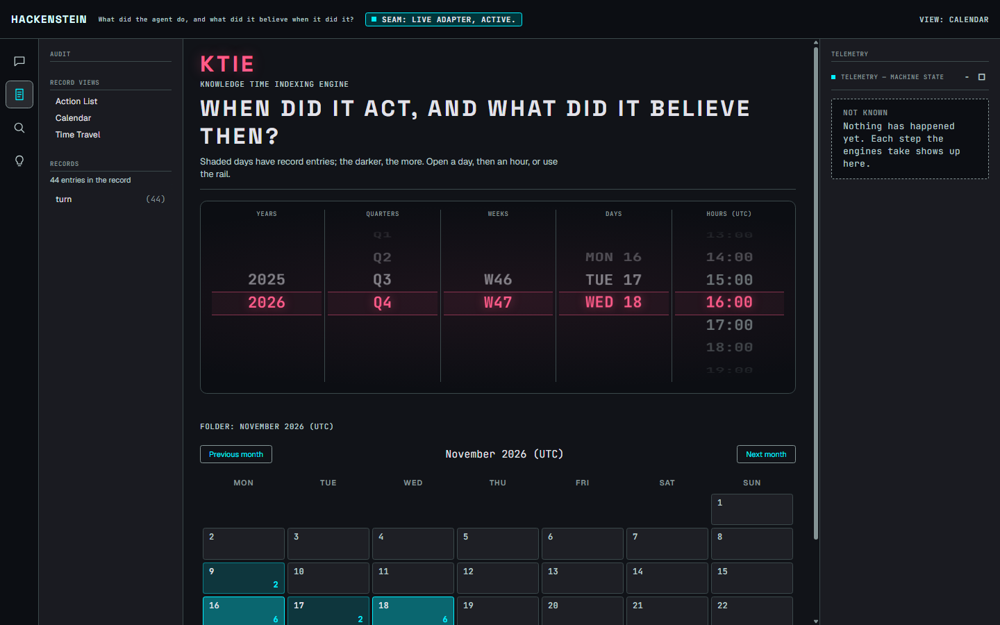
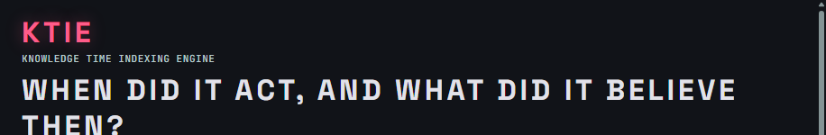
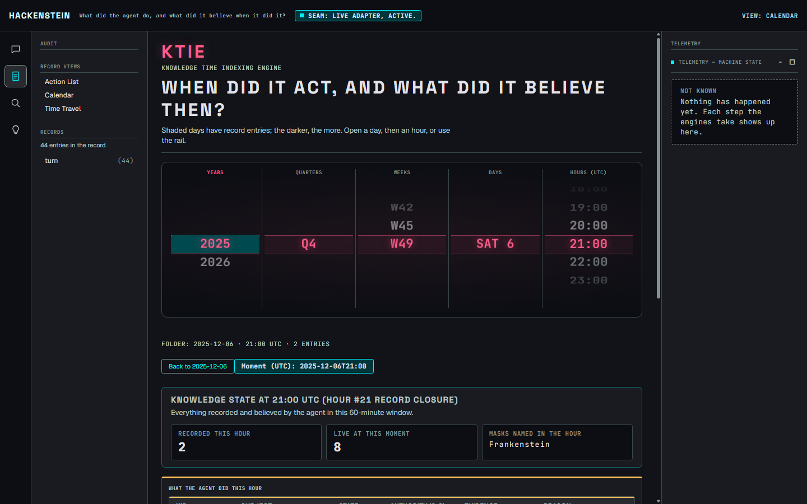
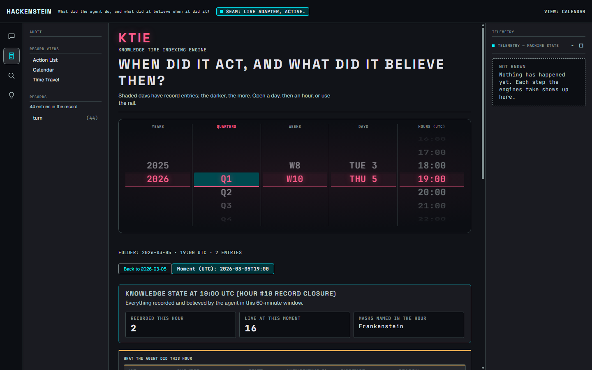
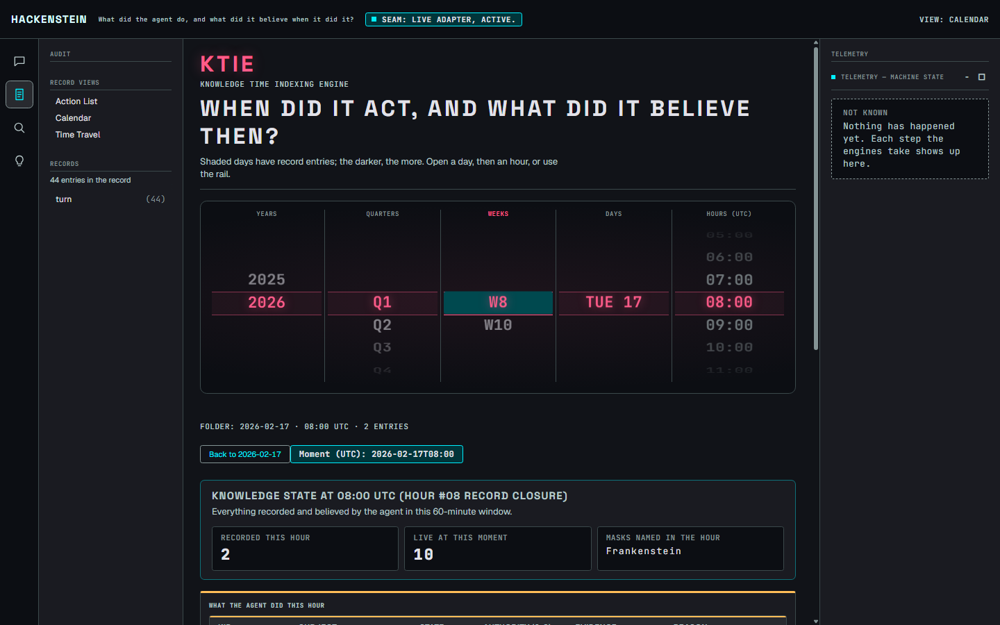
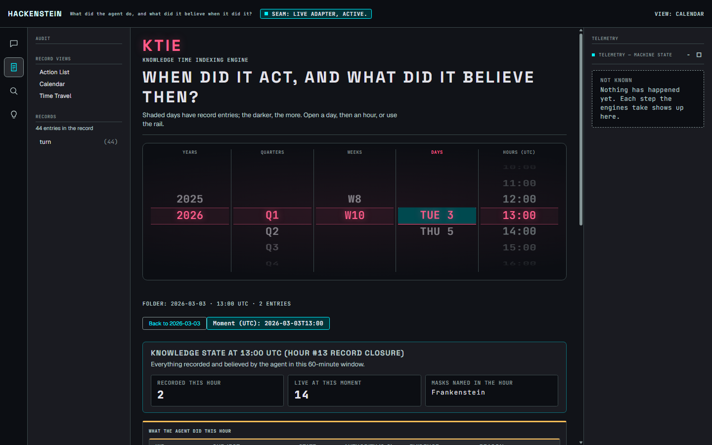
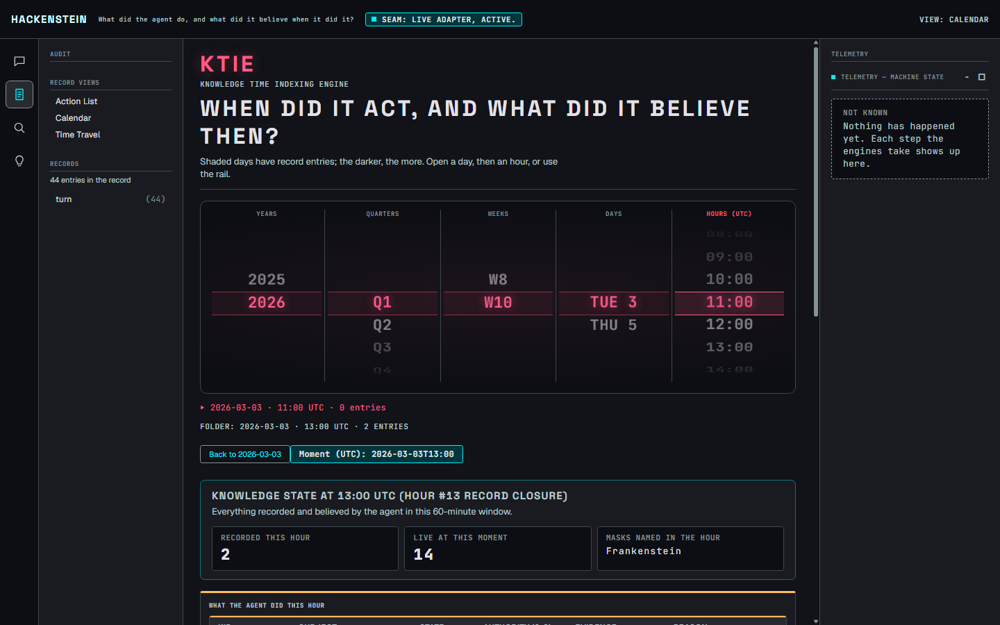
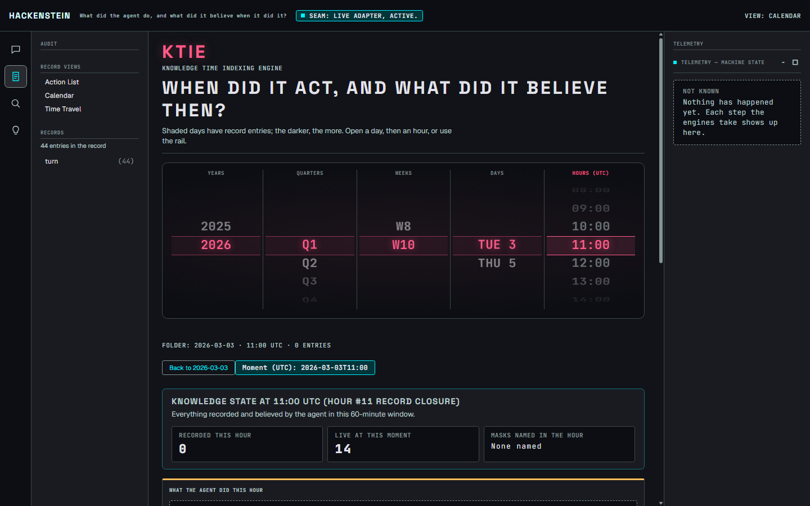
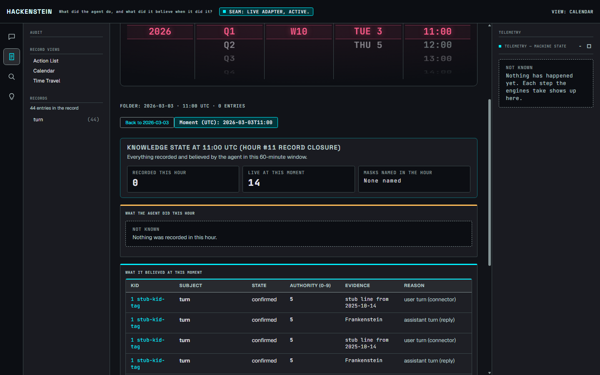
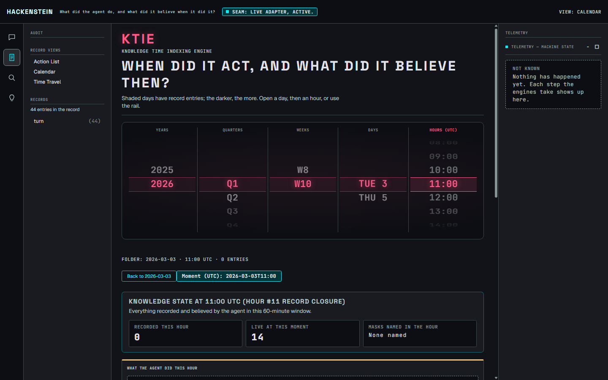

01 — AUDIT LANDS ON THE DRUMS
Tapping Audit opens the KTIE page. Rose KTIE header, five drums (2026 / Q4 / W47 / WED 18 / 16:00 centered), and the folder underneath is the November 2026 month grid.

02 — THE HEADER
KTIE in rose over "Knowledge Time Indexing Engine".

03 — YEARS, HOVERED AND SPUN
The Years wheel under the cursor: its head and selection band go rose, and spinning it re-picks the wheels to its right.

04 — QUARTERS, HOVERED AND SPUN
The Quarters wheel under the cursor, spun to a new quarter; Weeks, Days and Hours follow.

05 — WEEKS, HOVERED AND SPUN
The Weeks wheel under the cursor, spun to a new week; Days and Hours follow.

06 — DAYS, HOVERED AND SPUN
The Days wheel under the cursor, spun to a new day; the Hours wheel follows.

07 — HOURS SPINNING, FOLDER HOLDS
Mid-spin: the rose passing line names the moment going by ("2026-03-03 · 11:00 UTC · 0 entries") while the folder still shows the 13:00 hour view it had before.

08 — DEEP SELECTION, FOLDER SETTLED
The same moment after the wheels settle: the passing line is gone, the caption reads "FOLDER: 2026-03-03 · 11:00 UTC · 0 ENTRIES", and the folder is the 11:00 hour view.

09 — FOLDER UNDER THE SETTLED DRUMS
Scrolled down: the settled drums on top, the folder underneath — what the agent did that hour (honestly empty: nothing was recorded) and what it believed at that moment.

10 — AN HOUR CLICKED: HOUR VIEW WITH DRUMS ABOVE
Clicking an hour on the drums opens that hour's view, drums still on top. Same end state as 08 — same moment — reached by clicking instead of spinning.